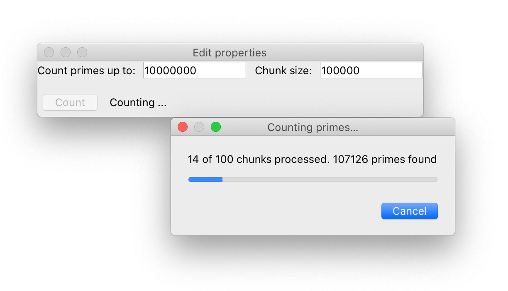

Complete examples¶
This section describes three complete examples, that make use of the three different background task types that Traits Futures currently supports.
Slow squares¶

This example script demonstrates a
simple TraitsUI application that allows several background calculations to be
running simultaneously, and displays the state of all previously submitted
calculations in a table. Each “calculation” is a squaring operation; the
calculation may fail randomly, with an increased chance of failure for larger
inputs.
# (C) Copyright 2018-2021 Enthought, Inc., Austin, TX
# All rights reserved.
#
# This software is provided without warranty under the terms of the BSD
# license included in LICENSE.txt and may be redistributed only under
# the conditions described in the aforementioned license. The license
# is also available online at http://www.enthought.com/licenses/BSD.txt
#
# Thanks for using Enthought open source!
import logging
import random
import time
from traits.api import (
Button,
Dict,
HasStrictTraits,
Instance,
List,
observe,
Property,
Range,
Str,
)
from traits_futures.api import (
CallFuture,
CANCELLED,
CANCELLING,
COMPLETED,
EXECUTING,
FAILED,
submit_call,
TraitsExecutor,
WAITING,
)
from traitsui.api import (
HGroup,
Item,
TabularAdapter,
TabularEditor,
UItem,
VGroup,
View,
)
def slow_square(n, timeout=5.0):
"""
Compute the square of an integer, slowly and unreliably.
The input should be in the range 0-100. The larger
the input, the longer the expected time to complete the operation,
and the higher the likelihood of timeout.
"""
mean_time = (n + 5.0) / 5.0
sleep_time = random.expovariate(1.0 / mean_time)
if sleep_time > timeout:
time.sleep(timeout)
raise RuntimeError("Calculation took too long.")
else:
time.sleep(sleep_time)
return n * n
class JobTabularAdapter(TabularAdapter):
columns = [
("Job State", "state"),
]
#: Row colors for the table.
colors = Dict(
{
CANCELLED: (255, 0, 0),
CANCELLING: (255, 128, 0),
EXECUTING: (128, 128, 255),
FAILED: (255, 192, 255),
COMPLETED: (128, 255, 128),
WAITING: (255, 255, 255),
}
)
#: Text to be displayed for the state column.
state_text = Property(Str())
def _get_bg_color(self):
return self.colors[self.item.state]
def _get_state_text(self):
job = self.item
state = job.state
state_text = state.title()
if state == COMPLETED:
state_text += ": result={}".format(job.result)
elif state == FAILED:
state_text += ": {}".format(job.exception[1])
return state_text
class SquaringHelper(HasStrictTraits):
#: The Traits executor for the background jobs.
traits_executor = Instance(TraitsExecutor)
#: List of the submitted jobs, for display purposes.
current_futures = List(Instance(CallFuture))
#: Start a new squaring operation.
square = Button()
#: Cancel all currently executing jobs.
cancel_all = Button()
#: Clear completed jobs from the list of current jobs.
clear_finished = Button()
#: Value that we'll square.
input = Range(low=0, high=100)
@observe("square")
def _do_slow_square(self, event):
future = submit_call(self.traits_executor, slow_square, self.input)
self.current_futures.append(future)
@observe("cancel_all")
def _cancel_all_futures(self, event):
for future in self.current_futures:
future.cancel()
@observe("clear_finished")
def _clear_finished_futures(self, event):
for future in list(self.current_futures):
if future.done:
self.current_futures.remove(future)
def default_traits_view(self):
return View(
HGroup(
VGroup(
Item("input"),
UItem("square"),
UItem("cancel_all"),
UItem("clear_finished"),
),
VGroup(
UItem(
"current_futures",
editor=TabularEditor(
adapter=JobTabularAdapter(),
auto_update=True,
),
),
),
),
width=1024,
height=768,
resizable=True,
)
if __name__ == "__main__":
logging.basicConfig(
level=logging.DEBUG,
format=(
"%(asctime)s %(levelname)-8.8s [%(name)s:%(lineno)s] %(message)s"
),
)
traits_executor = TraitsExecutor()
try:
view = SquaringHelper(traits_executor=traits_executor)
view.configure_traits()
finally:
traits_executor.shutdown()
Prime counting¶
This example script demonstrates the
ProgressFuture, which reports progress information back to the
GUI as the background computation progresses.
# (C) Copyright 2018-2021 Enthought, Inc., Austin, TX
# All rights reserved.
#
# This software is provided without warranty under the terms of the BSD
# license included in LICENSE.txt and may be redistributed only under
# the conditions described in the aforementioned license. The license
# is also available online at http://www.enthought.com/licenses/BSD.txt
#
# Thanks for using Enthought open source!
"""
Example showing progress reporting from a background computation, with a
modal progress dialog.
"""
from pyface.qt import QtCore, QtGui
from pyface.ui.qt4.dialog import Dialog
from traits.api import (
Any,
Bool,
Button,
HasStrictTraits,
Instance,
Int,
observe,
Property,
Str,
)
from traits_futures.api import (
CANCELLED,
COMPLETED,
ProgressFuture,
submit_progress,
TraitsExecutor,
)
from traitsui.api import HGroup, Item, UItem, VGroup, View
class ProgressDialog(Dialog, HasStrictTraits):
"""
Dialog showing progress of the prime-counting operation.
"""
#: The future that we're listening to.
future = Instance(ProgressFuture)
#: The message to display.
message = Str()
#: The maximum number of steps.
maximum = Int(1)
#: The current step.
value = Int(0)
def cancel(self):
"""
Cancel the running future when the cancel button is pressed.
"""
self._cancel_button.setEnabled(False)
cancelled = self.future.cancel()
if cancelled:
self.message = "Cancelling\N{HORIZONTAL ELLIPSIS}"
# Private traits ##########################################################
_cancel_button = Any()
_message_control = Any()
_progress_bar = Any()
# Private methods #########################################################
def _create_contents(self, parent):
layout = QtGui.QVBoxLayout()
layout.addWidget(self._create_message(parent, layout))
layout.addWidget(self._create_progress_bar(parent, layout))
layout.addWidget(self._create_cancel_button(parent))
parent.setLayout(layout)
def _create_cancel_button(self, parent):
buttons = QtGui.QDialogButtonBox()
self._cancel_button = buttons.addButton(
"Cancel", QtGui.QDialogButtonBox.RejectRole
)
self._cancel_button.setDefault(True)
buttons.rejected.connect(self.cancel, type=QtCore.Qt.QueuedConnection)
return buttons
def _create_message(self, dialog, layout):
self._message_control = QtGui.QLabel(self.message, dialog)
self._message_control.setAlignment(
QtCore.Qt.AlignTop | QtCore.Qt.AlignLeft
)
return self._message_control
def _create_progress_bar(self, dialog, layout):
self._progress_bar = QtGui.QProgressBar(dialog)
return self._progress_bar
@observe("message")
def _update_message(self, event):
message = event.new
if self._message_control is not None:
self._message_control.setText(message)
@observe("maximum")
def _update_progress_bar_maximum(self, event):
maximum = event.new
if self._progress_bar is not None:
self._progress_bar.setMaximum(maximum)
@observe("value")
def _update_progress_bar_value(self, event):
value = event.new
if self._progress_bar is not None:
self._progress_bar.setValue(value)
@observe("future:progress")
def _report_progress(self, event):
progress_info = event.new
current_step, max_steps, count_so_far = progress_info
self.maximum = max_steps
self.value = current_step
self.message = "{} of {} chunks processed. {} primes found".format(
current_step, max_steps, count_so_far
)
@observe("future:done")
def _respond_to_completion(self, event):
self.close()
def isqrt(n):
"""
Find the integer square root of a positive integer.
"""
s = n
while True:
d = n // s
if s <= d:
return s
s = (s + d) // 2
def is_prime(n):
"""
Determine whether a nonnegative integer is prime.
"""
return n >= 2 and all(n % d for d in range(2, isqrt(n) + 1))
def count_primes_less_than(n, chunk_size, progress=None):
"""
Count how many primes there are smaller than n.
Uses a deliberately inefficient algorithm.
"""
nchunks = -(-n // chunk_size)
chunks = [
(i * chunk_size, min((i + 1) * chunk_size, n)) for i in range(nchunks)
]
prime_count = 0
for chunk_index, (start, end) in enumerate(chunks):
progress((chunk_index, nchunks, prime_count))
prime_count += sum(is_prime(n) for n in range(start, end))
progress((nchunks, nchunks, prime_count))
return prime_count
class PrimeCounter(HasStrictTraits):
"""
UI to compute primes less than a given number.
"""
#: The Traits executor for the background jobs.
traits_executor = Instance(TraitsExecutor)
#: Calculation future.
future = Instance(ProgressFuture)
#: Number to count primes up to.
limit = Int(10 ** 6)
#: Chunk size to use for the calculation.
chunk_size = Int(10 ** 4)
#: Button to start the calculation.
count = Button()
#: Bool indicating when the count should be enabled.
count_enabled = Property(Bool, observe="future.done")
#: Result from the previous run.
result_message = Str("No previous result")
#: Limit used for most recent run.
_last_limit = Int()
@observe("count")
def _count_primes(self, event):
self._last_limit = self.limit
self.future = submit_progress(
self.traits_executor,
count_primes_less_than,
self.limit,
chunk_size=self.chunk_size,
)
self.result_message = "Counting ..."
dialog = ProgressDialog(
title="Counting primes\N{HORIZONTAL ELLIPSIS}",
future=self.future,
)
dialog.open()
def _get_count_enabled(self):
return self.future is None or self.future.done
@observe("future:done")
def _report_result(self, event):
future = event.object
if future.state == COMPLETED:
self.result_message = "There are {} primes smaller than {}".format(
future.result,
self._last_limit,
)
elif future.state == CANCELLED:
self.result_message = "Run cancelled"
def default_traits_view(self):
return View(
VGroup(
HGroup(
Item("limit", label="Count primes up to"),
Item("chunk_size"),
),
HGroup(
UItem("count", enabled_when="count_enabled"),
UItem("result_message", style="readonly"),
),
),
resizable=True,
)
if __name__ == "__main__":
traits_executor = TraitsExecutor()
try:
view = PrimeCounter(traits_executor=traits_executor)
view.configure_traits()
finally:
traits_executor.shutdown()
Approximating Pi¶

The final example uses the Chaco 2d
plotting library and shows the use of the IterationFuture.
Successive approximations to π are computed and plotted, with the plot
updated live with each new value reported by the background task.
# (C) Copyright 2018-2021 Enthought, Inc., Austin, TX
# All rights reserved.
#
# This software is provided without warranty under the terms of the BSD
# license included in LICENSE.txt and may be redistributed only under
# the conditions described in the aforementioned license. The license
# is also available online at http://www.enthought.com/licenses/BSD.txt
#
# Thanks for using Enthought open source!
"""
Example showing a background iteration that produces successive
approximations to pi, with resulting values being used to update
a Chaco plot.
Note: this example requires NumPy and Chaco.
"""
import numpy as np
from chaco.api import ArrayPlotData, Plot
from chaco.overlays.coordinate_line_overlay import CoordinateLineOverlay
from enable.component_editor import ComponentEditor
from traits.api import (
Bool,
Button,
Float,
HasStrictTraits,
Instance,
Int,
List,
observe,
Property,
Tuple,
)
from traits_futures.api import (
IterationFuture,
submit_iteration,
TraitsExecutor,
)
from traitsui.api import HGroup, Item, UItem, VGroup, View
def pi_iterations(chunk_size):
"""
Generate successive approximations to pi via a Monte Carlo method.
Infinite iterator producing successive approximations to pi, via the usual
Monte-Carlo method: generate random points in a square, and count the
proportion that lie in an inscribed circle.
Parameters
----------
chunk_size : int
The number of points to sample on each iteration.
Yields
------
result : tuple (int, float, float)
Tuple containing:
- the number of points generated
- the approximation to pi
- a two-sided error giving a ~95% confidence interval on the
approximation.
"""
nsamples = ninside = 0
while True:
samples = np.random.random(size=(chunk_size, 2))
nsamples += chunk_size
ninside += int(np.sum((samples * samples).sum(axis=1) <= 1.0))
# Compute approximation along with a two-sided error giving
# a ~95% confidence interval on that approximation.
#
# We use a normal approximation interval. See wikipedia for details:
# https://en.wikipedia.org/wiki/Binomial_proportion_confidence_interval
approximation = 4 * ninside / nsamples
noutside = nsamples - ninside
error = 7.839856 * np.sqrt(ninside * noutside / (nsamples ** 3))
yield nsamples, approximation, error
class PiIterator(HasStrictTraits):
"""
View and plot of pi approximation running in the background.
"""
#: The Traits executor for the background jobs.
traits_executor = Instance(TraitsExecutor)
#: Chunk size to use for the approximations.
chunk_size = Int(1000000)
#: Calculation future.
future = Instance(IterationFuture)
#: Results arriving from the future.
results = List(Tuple(Int(), Float(), Float()))
#: Button to start the pi approximation.
approximate = Button()
#: Is the approximate button enabled?
approximate_enabled = Property(Bool(), observe="future.state")
#: Button to cancel the pi approximation.
cancel = Button()
#: Is the cancel button enabled?
cancel_enabled = Property(Bool(), observe="future.state")
#: Maximum number of points to show in the plot.
max_points = Int(100)
#: Data for the plot.
plot_data = Instance(ArrayPlotData, ())
#: The plot.
plot = Instance(Plot)
@observe("approximate")
def _calculate_pi_approximately(self, event):
self.future = submit_iteration(
self.traits_executor, pi_iterations, chunk_size=self.chunk_size
)
@observe("cancel")
def _cancel_future(self, event):
self.future.cancel()
@observe("future")
def _reset_results(self, event):
self.results = []
@observe("future:result_event")
def _record_result(self, event):
result = event.new
self.results.append(result)
self._update_plot_data()
def _get_approximate_enabled(self):
return self.future is None or self.future.done
def _get_cancel_enabled(self):
return self.future is not None and self.future.cancellable
def _update_plot_data(self):
recent_results = self.results[-self.max_points :] # noqa: E203
# We need the reshape for the case where the results list is empty.
results = np.array(recent_results).reshape((-1, 3))
counts, approx, errors = results.T
self.plot_data.update_data(
counts=counts / 1e6,
approx=approx,
upper=approx + errors,
lower=approx - errors,
)
def _plot_default(self):
plot = Plot(self.plot_data)
self._update_plot_data()
plot.plot(("counts", "approx"), color="red")
plot.plot(("counts", "upper"), color="gray")
plot.plot(("counts", "lower"), color="gray")
plot.x_axis.title = "Counts (millions of points)"
plot.y_axis.title = "Approximation"
# Add dashed horizontal line at pi.
pi_line = CoordinateLineOverlay(
component=plot,
value_data=[np.pi],
color="green",
line_style="dash",
)
plot.underlays.append(pi_line)
# Allow extra room for the y-axis label.
plot.padding_left = 100
return plot
def default_traits_view(self):
return View(
HGroup(
UItem("plot", editor=ComponentEditor()),
VGroup(
Item("chunk_size"),
Item("max_points"),
UItem("approximate", enabled_when="approximate_enabled"),
UItem("cancel", enabled_when="cancel_enabled"),
),
),
resizable=True,
)
if __name__ == "__main__":
traits_executor = TraitsExecutor()
try:
view = PiIterator(traits_executor=traits_executor)
view.configure_traits()
finally:
traits_executor.shutdown()